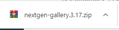
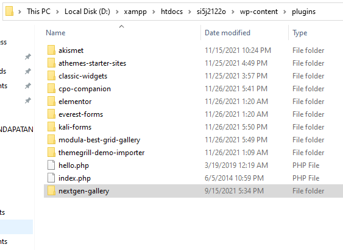
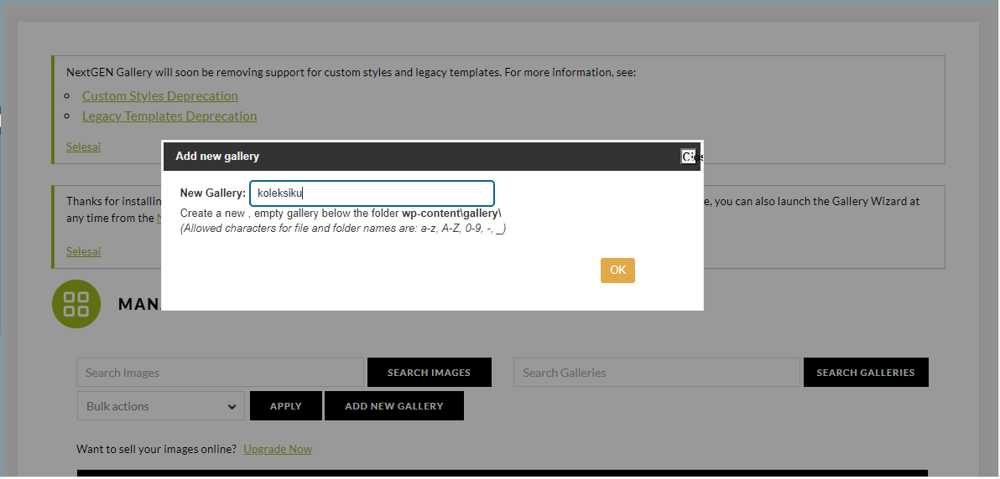
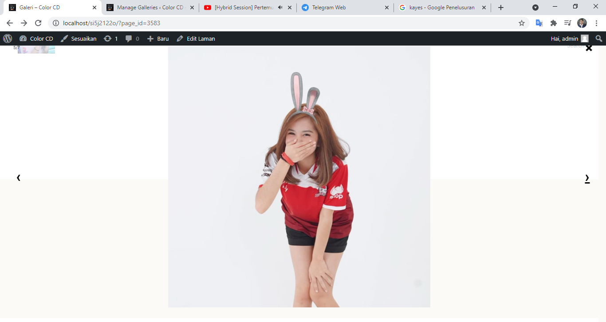
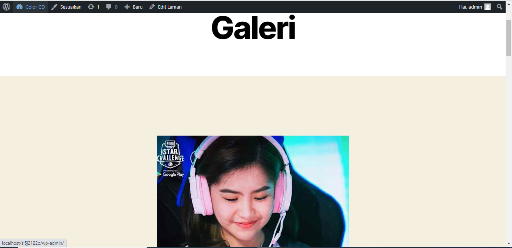
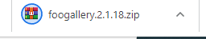
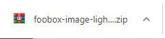
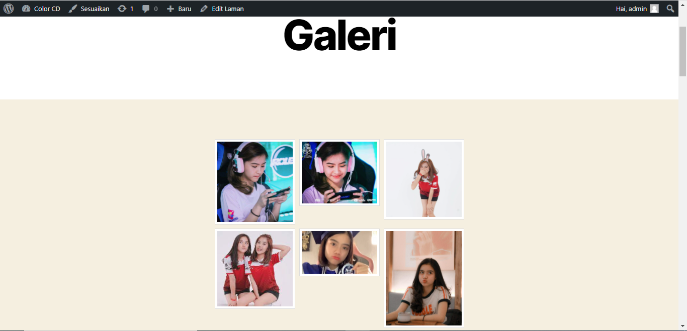
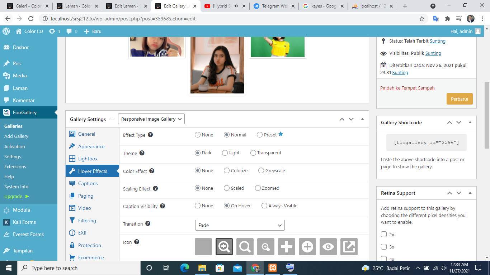

NIM = 1922500128
Nama = Vallerey Oscar Widi Yosma
Kelompok = SI5J
Pada pertemuan 5 tanggal 15 November 2021, saya dapat menyimpulkan antara lain:
- Bagaimana memasang atau mengaplikasikan plugins ke dalam wordpress kita.
- cara install tema ada 3:
1) langsung online
https://wordpress.org/plugins/
2) semi online
unggah file zip tema
3) pindahkan folder tema.
- Mendowload plugins nextgen-gallery kemudian extract taruh di folder htdocs si5j2122o wp-content, di bagian plugin.
- Mengatur gallery dan menampilkan di bagian front-ent mengganti tampilan" lainya.
- Mendowload plugins lainya yaitu foogall dan foobox-image pakai cara instal seperti biasa aktifkan banyak menu dan setingan lebih lengkap.
- Intinya mencoba plugins dan upload foto-foto ke gallery dengan tampilan yang menarik, Teerkhir bapak menerangkan singkat tentang plugins SEO dan lain"
ini hasil yang saya terapkan:








